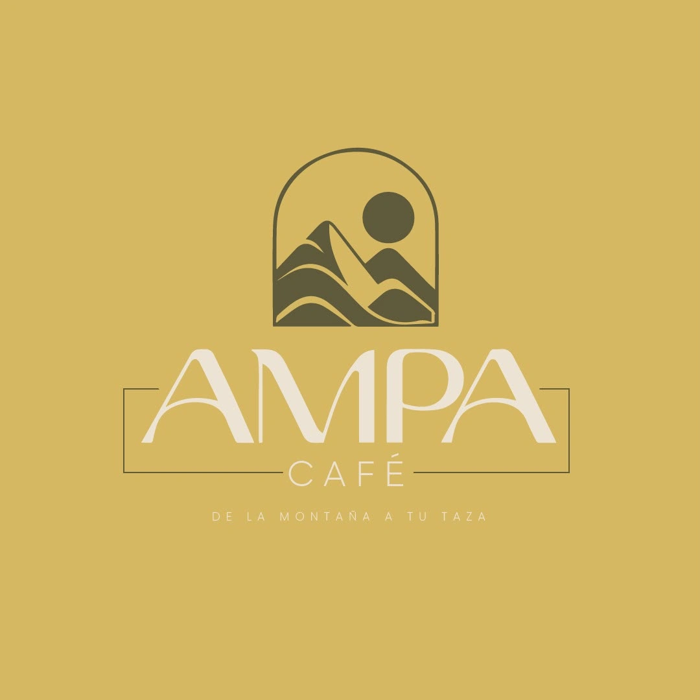

Memoria
Mantener presente la historia que inspira nuestro nombre.
AMPA CAFÉ · BRAND BOOK
Una historia de familia.
Un origen que nos une.
Una identidad para compartir.
ALGECIRAS, HUILA · COLOMBIA

AMPA nace como un homenaje a Amparo Ramírez Olaya y a la memoria que permanece en una familia cafetera.
Su nombre guarda un vínculo afectivo: recordar a través de un aroma, compartir alrededor de una taza y mantener presente una historia escrita con amor, esfuerzo y dedicación.
Desde la vereda La Primavera, en Algeciras, el café conecta el paisaje de montaña con esos momentos cotidianos que se convierten en recuerdos.
Honrar una memoria.
Cuidar un origen.
Compartir una taza.
Honrar la memoria de Amparo Ramírez Olaya a través de un café que conecte el origen, la tradición familiar y la calidez de compartir.
Mantener presente la historia que inspira nuestro nombre.
Valorar el esfuerzo y el cuidado que acompañan al café.
Crear espacio para la conversación y los reencuentros.
Reconocer el territorio y el trabajo de quienes cultivan.
Compartir y conservar los vínculos que nos unen.
Una voz sensible y sencilla, con detalles concretos del origen y sin exageraciones.
«Hay aromas que nos devuelven a casa».
«Una taza para compartir, una historia para recordar».
El lema «De la montaña a tu taza» expresa origen y recorrido. «El aroma de los recuerdos» acompaña las historias de memoria y encuentro.
Vereda La Primavera
Algeciras, Huila · Colombia
Datos del producto aportado. Cada nuevo café o lote debe llevar su información correspondiente.
Dos expresiones complementarias, con funciones claras dentro del sistema.
Símbolo de montaña y sol dentro de un arco, acompañado del nombre AMPA Café. Sus elementos pueden funcionar por separado cuando el contexto permite reconocer la marca.
Descargar referencia original ↓Referencia raster aportada. No sustituye un archivo vectorial de producción.
Homenaje a Amparo Ramírez Olaya.
Evocan el origen y el trabajo que acompaña al café.
El sol expresa calidez; el arco enmarca el paisaje como una ventana.
La lectura simbólica de montañas, sol y arco es la interpretación narrativa propuesta para este manual; el homenaje del nombre fue confirmado por la marca.
Una base cromática tomada de las referencias originales. Pulsa un color para copiar su código.
Paleta principal: ocre, oliva y marfil.
Acentos: café profundo y terracota, vinculados a la firma alternativa.
Valores digitales de referencia obtenidos de imágenes raster; terracota aproximado. CMYK orientativo, pendiente de perfil de impresión y prueba física. No se ha fijado equivalencia Pantone.
Oliva sobre marfil.
La claridad también es parte de nuestra identidad.
Regular e itálica para relatos, titulares y frases emocionales. Es la familia editorial utilizada en este brandbook.
Aa Bb Cc Dd Ee Ff Gg Hh Ii Jj
0123456789 · ÁÉÍÓÚÑ
Para información técnica, navegación, fichas de producto y textos de lectura continua.
Aa Bb Cc Dd Ee Ff Gg Hh Ii Jj
0123456789 · ÁÉÍÓÚÑ
Criterios propuestos para consolidar los originales maestros y realizar pruebas de producción.
Propuesta: usar como unidad x la altura de «CAFÉ». Reservar al menos x alrededor de la firma, medido desde su elemento exterior.
Seleccionar la firma según el formato y su legibilidad. Evitar presentar ambas como marcas distintas dentro de una misma composición.
En bordados, pines o espacios pequeños, priorizar el símbolo o una versión reducida aprobada. Los tamaños mínimos se fijarán mediante pruebas reales, no desde el mockup.
Luz natural cálida, gestos espontáneos, materiales táctiles y el ritual de preparar y compartir café.
Esta escena es una recreación conceptual. Para comunicar la finca, los productores o la historia documental de Amparo, utilizar fotografías reales verificadas.
El empaque presenta el origen; el unboxing transforma la entrega en una experiencia de descubrimiento.
Una propuesta con frente ocre, laterales marfil y montañas oliva. La información del café se mantiene clara y el reverso abre espacio al homenaje.
La caja anticipa la identidad con colores, símbolo y textura.
La apertura revela un mensaje de bienvenida y el homenaje familiar.
El café y el método invitan a un ritual acompañado por una guía.
La experiencia continúa en una taza y en el encuentro.
Identificar variedad, proceso, origen, altitud, peso neto, presentación, fecha de tueste y lote según corresponda. Los textos finales y la información aplicable deben revisarse antes de impresión.
No convertir los mockups en artes de producción: definir medidas, troquel, sangrado, cierres y válvula con el proveedor. Validar la legibilidad del texto y el funcionamiento del empaque.
El diseño azul marino aportado se conserva en la galería como antecedente. No incorpora un nuevo color a la paleta principal.
Explora las 15 imágenes desarrolladas. Abre cada una para ver su detalle y descargar el recurso de presentación.
15 aplicaciones
Bolsa de 500 g con válvula. Ocre, marfil y oliva; información de origen y homenaje familiar.
Aplicación del arte azul marino aportado por la marca. Referencia histórica, fuera de la paleta principal propuesta.
Caja con prensa francesa y café de 250 g. Bienvenida, descubrimiento y preparación como secuencia de experiencia.
Colección de mugs en marfil, ocre y oliva con el imagotipo y las montañas.
Tres propuestas de camisetas con texturas de montaña y la firma principal.
Aplicación bordada en gorras. El arte se simplifica para ajustarse al proceso textil.
Frentes oliva y ocre; reverso marfil. Los campos de contacto son marcadores pendientes.
Pendón y valla con mensajes breves, contraste y fotografía de producto.
Pines y stickers que exploran el símbolo, el nombre y los mensajes de marca.
Posavasos coordinados y propuesta de grabado en vidrio para una Chemex.
Sobres, hoja membreteada y lapiceros con una aplicación contenida de la identidad.
Propuestas de web, app móvil y perfil de Instagram. Son conceptos visuales, no servicios existentes.
Stand de degustación y delantales para una experiencia coherente de atención.
Vasos con faja, bolsas de papel y bolsa de tela como una misma familia.
Escena conceptual de encuentro familiar. Personas y paisaje recreados; no documenta la finca ni a Amparo.
Este brandbook reúne la base narrativa, la identidad aportada y sus aplicaciones conceptuales.
Las imágenes pueden descargarse desde la galería. La vista de impresión reorganiza el contenido sin animaciones para facilitar una futura edición en PDF.
Confirmado: homenaje a Amparo Ramírez Olaya, vínculo de familia cafetera, origen en La Primavera, Algeciras, variedad Borbón Rosado, proceso lavado y altitud de 1.826 m s. n. m.
Propuesto: textos de plataforma, lectura simbólica, roles de las firmas, tipografías de apoyo y criterios de uso. Los colores son referencias digitales del material aportado.
Pendiente para producción: originales vectoriales, versiones reducidas y monocromas, fuente exacta del logo, tamaños mínimos, pruebas de color y datos de contacto.
Mockups: visualizaciones generadas para explorar aplicaciones. La app, la web, el perfil social, los espacios y las escenas no documentan servicios o instalaciones existentes.